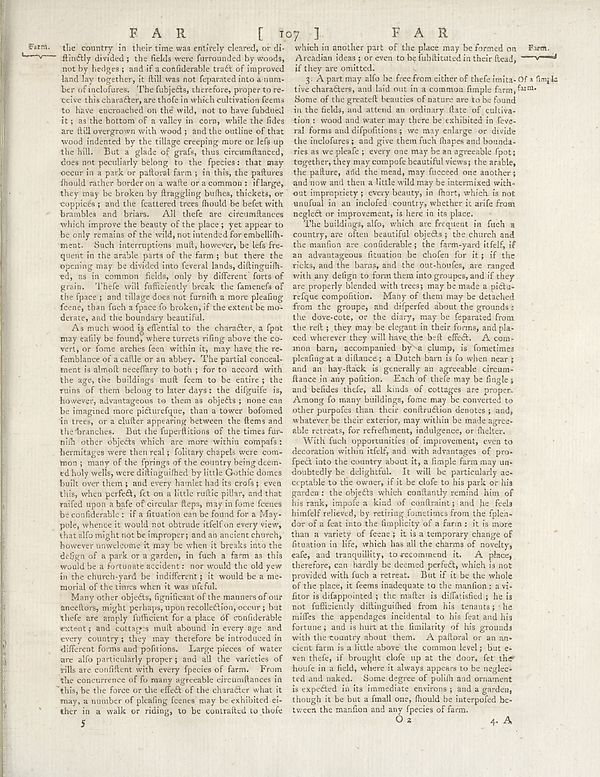

Scan ID britannica:309f765b1ecc83e0a7f7762e44b4a927a7555443:train:217
Image SHA-256 7dc36e3a55f8250a0b4a7854c3ac1ca73e4bfb1ae457129c889057610a8084e7
Status: ok. Running header: FAR [ 107] FAR (catchword). Removed page furniture: Page-header: FAR [ 107] FAR, Page-footer: 5 O2 +4.
PDF · raw Parse reply · LaTeX
Entries: E0004

| # | Class | Box | Parse 3.5 | Used text | Source |
|---|---|---|---|---|---|
| 1 | Text | [0.04, 0.0516, 0.0889, 0.0648] | Form. | Form. | super_vl |
| 2 | Text | [0.0898, 0.0508, 0.4766, 0.4148] | the country in their time was entirely cleared, or di- finly divided ; the fields were forwarded by woods, not by helges , and if a confidential trait of improved land by together, or fill them not reported into a number ber of incolures. The subjects, therefore, proper to re- ctories this character, are those which culminated to have accrued on the wild, not to have fishbed it ; as the bottom of a valley in corn, while the fades are fil unwagons with winded, and an one of the woods just overing more or flat up the hill." But a glade of graf, thus circumflanced, does not generally belong to th | the country in their time was entirely cleared, or di- sinitely divided ; the fields were surrounded by woods, not by hedges ; and if a considerable tract of improved land lay together, it still was not feperated into a num- ber of inclofures. The fubjects, therefore, proper to re- ceive this character, are those in which cultivation feems to have encroached on the wild, not to have subdued it ; as the bottom of a valley in corn, while the fides are ftil overgrown with wood ; and the outline of that wood indented by the tillage creeping more or less up the hill. But a glade of grass, thus circ | super_vl |
| 3 | Text | [0.0908, 0.4156, 0.4746, 0.7625] | As much wood ij efential to the charter, a foot may raily be found, where tourists may go above the ice veri, or tone reaches low within it, may have the re- femblance of a callle or an abby. The partial conceal much should deceifney to buy! I sent accord with the age, the building mullk fees to be entire i the ruins of them belong to litter days; the digdle is, however, advantageous to them as objects; none can be imagined more petturique, than oyster bolomed in units, or a chalic appearing between the flora and the branches. But the figurefictions of the times far nib other objects which are | As much wood is essential to the character, a spot may easily be found, where turrets rising above the covert, or some arches seen within it, may have the resemblance of a castle or an abbey. The partial concealment is almost necessary to both; for to accord with the age, the buildings must seem to be entire; the ruins of them belong to later days; the difficulty is, however, advantageous to them as objects; none can be imagined more picturesque, than a tower bosomed in trees, or a cluster appearing between the elms and the branches. But the superfluities of the times furnish other objects whi | super_vl |
| 4 | Text | [0.0918, 0.7633, 0.4736, 0.9234] | Many other objects, figured on the manner of monitors, might perhaps upon recollection, occur; but thefe are simply futificient for a place of conforable excetant and cotates shall abound in ever age and every country, they may therefore be introduced in different forms and politicians. Large pieces of water are also particularly project and all the varieties of rills and conflicts about every person of arm. From the concurrence of fo many agreeable circumlances in this, be the force over the effect of the character what it may, a number of placing forces may be exhibited ei- ther in a walk or | Many other objects, figured on the manner of monitors, might perhaps upon recollection, occur; but these are simply sufficient for a place of considerable extent; and cottages must abound in every age and every country; they may therefore be introduced in different forms and positions. Large pieces of water are also particularly proper; and all the varieties of rills are confluent with every species of farm. From the concurrence of so many agreeable circumstances in this, be the force or the effect of the character what it may, a number of pleasing scenes may be exhibited ei- ther in a walk or | super_vl |
| 5 | Text | [0.4834, 0.0531, 0.916, 0.0938] | which in another part of the place may be formed on Arcaidan idea ; or even to be fullbitted in their head, if they are omitted. | which in another part of the place may be formed on Arcadian ideas ; or even to be substituted in their head, if they are omitted. | super_vl |
| 6 | Text | [0.4844, 0.0945, 0.8623, 0.282] | 3 A partire ploile fee free from either of these limits Of a single tive characters, and laid out in a common limple farm, "am. Some of the greatest beaches that nature we to be found In the fields, and attend an ordinary date of cultiva- tion : wood and water may there be exhibited in feve- alifornia and dispositions; see may enlarge our divide the incolores and give them fresh dropers and boundaries ries as we please ; everyone may be an agreeable foot; together, they may comprise beautiful towns in arables, the picture, and then needs, you proceed one another; and now and then a little wild | A part may also be free from either of these imitative characters, and laid out in a common simple farm. Some of the greatest beauties of nature are to be found in the fields, and attend an ordinary state of cultivation: wood and water may there be exhibited in several forms and dispositions; we may enlarge or divide the inclosures; and give them such shapes and boundaries as we please; every one may be an agreeable spot; together, they may compose beautiful views; the arable, the pasture, and the mead, may succeed one another; and now and then a little wild may be intermixed without improprie | super_vl |
| 7 | Text | [0.4854, 0.2828, 0.8633, 0.5609] | On the buildings, all, which are frequent in fach a country are often beautiful objects; the church and the manñon are considerable; the farm-owl itself, if an advantageous function the chosen for it; if the ricks, and the baras, and the out-hoofous, are ranged with any edges to form that into groups, and if they are properly bonded with trees may be made such- refque composition. Many of them may be detached from the groups, and digested about the grounds; the device, or the dairy; may be separated from the roll; they may be elegant in their forms, and placed ad never they fall line the bell | The buildings, also, which are frequent in such a country, are often beautiful objects; the church and the mansion are considerable; the farm-yard itself, if an advantageous situation be chosen for it; if the ricks, and the barns, and the out-houſes, are ranged with any deſign to form them into groups, and if they are properly blended with trees; may be made a pic- turefque composition. Many of them may be detached from the group, and dispersed about the grounds; the dove-cote, or the dairy, may be feperated from the reſt; they may be elegant in their forms, and pla- ced wherever they will hav | super_vl |
| 8 | Text | [0.4863, 0.5617, 0.8613, 0.918] | With fach opportunities of improvement, even to formation within field, and with advantages of pro- fect into the country about, in a female farm may doubtledly be delightful. It will be particularly ac- modities to the owner, if in be dude to his park or in garder; the objects which ultimately took him of his rank, impede a kind of confrontant; and he feels himelf relieved, by resting frontants from the flipla- fore of East into the majority of a farm; it is more than a variety of fence; it is a temporary change of function in life, which has the theories of novelty, eife, and tranquility, to | With such opportunities of improvement, even to decoration within itself, and with advantages of prospect into the country about it, a simple farm may undoubtedly be delightful. It will be particularly acceptable to the owner, if it be close to his park or his garden: the objects which constantly remind him of his rank, impose a kind of constraint; and he feels himself relieved, by retiring sometimes from the splendour of a seat into the simplicity of a farm: it is more than a variety of scene; it is a temporary change of situation in life, which has all the charms of novelty, ease, and tranqu | super_vl |
Britannica scans: National Library of Scotland, CC0 1.0. Wikipedia text: Wikipedia contributors, CC BY-SA 4.0, revision links on each page. Generated 2026-10-18T13:26:14+00:00.